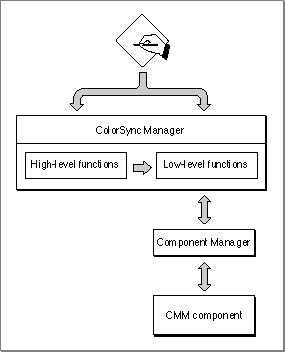

Legacy Document
Important: The information in this document is obsolete and should not be used for new development.
Important: The information in this document is obsolete and should not be used for new development.


QuickDraw GX and the ColorSync Manager
Unless your application uses QuickDraw GX to create and render images, your application must call ColorSync functions, such asNCMBeginMatchingandNCMDrawMatchedPicture, to match colors between devices.However, if your application uses QuickDraw GX and your application sets the view port attribute
gxEnableMatchPort, the ColorSync Manager automatically matches colors when your application draws to the screen.QuickDraw GX color profile objects contain ColorSync profiles, and each profile specifies the kind of matching to perform with it. For more information about QuickDraw GX color architecture, see the chapter "Colors and Color-Related Objects" in Inside Macintosh: QuickDraw GX.
QuickDraw GX version 1.1.2 or earlier uses ColorSync 1.0. However, because the ColorSync Manager provides robust backward compatibility including continued support of the ColorSync 1.0 API, you can use the ColorSync Manager with QuickDraw GX. For more information about the ColorSync Manager's backward compatibility, see the appendix, "ColorSync Manager Backward Compatibility."
Figure 3-9 The ColorSync Manager and the Component Manager
